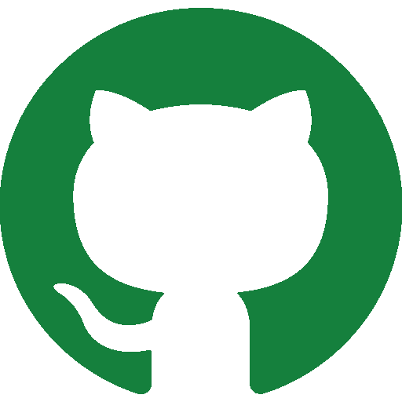

knowledge in:
Languages
- Java
- C++
- Python
Database
- sql (witch MySql)Web in process
- Html
- Css
- JavaScript
Interest:
- Learn
- Web development
- Be part of the community
- Share knowledge
- Contribute to projects
I'm Andres Felipe Romero 
Technology in sytems in process